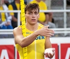

Armand "Mondo" Duplantis
Stavhoppare, 6,18 m Världsrekord 2020-02-15.
| Född: | 1999-11-10 Lafayette, Louisiana, USA. |
|---|
Noteringar
Armand "Mondo" Duplantis, född 10 november 1999 i Lafayette i Louisiana, är en amerikansk-svensk stavhoppare. Han innehar dubbla medborgarskap men representerar Sverige i tävlingssammanhang. Duplantis har världsrekordet i stavhopp med 6,18 meter satt den 15 februari 2020.
På klubbnivå i Sverige representerar Duplantis Upsala IF.
Biografi
Bakgrund
Duplantis är uppvuxen i Lafayette i Louisiana (USA) och är son till den amerikanske före detta stavhopparen Greg Duplantis och svenska Helena Duplantis (född Hedlund).[5] Helena sökte sig till USA på ett stipendium som friidrottare i sjukamp, men fortsatte sedan med volleyboll.[5] Genom sin mor fick Duplantis dubbelt medborgarskap.
Armand Duplantis har tre syskon, två äldre bröder och en yngre syster. Andreas Duplantis är också stavhoppare,[6][7] och Antoine Duplantis spelar med framgång baseboll i collegelaget LSU ”Tigers” på Louisiana State University.[8] Hans yngre syster Johanna Duplantis är också hon stavhoppare.
Duplantis började med stavhopp vid fyra års ålder.[9][10][11] Hans föräldrar byggde en stavhoppsbana på gräsmattan bakom huset.[12] Duplantis har samtliga inofficiella världsrekord för ålderskategorierna sju, åtta, nio, tio, elva och tolv år.[13][14] Han hade rekordet för 13-åringar fram till 2015. Samtliga dessa inofficiella rekord gjorda som amerikansk medborgare. Hans far coachade honom, men Armand Duplantis har själv berättat hur han noga studerade Youtubeklipp och försökte efterlikna stavhoppen på banan på trädgården.[11] En stor förebild var Renaud Lavillenie.[11]
Övergång till Sverige
Svenska Friidrottsförbundet börjar logga alla tävlande svenskar från att de är 14 år gamla.[15] Eftersom Armand Duplantis hade dubbelt medborgarskap loggades även hans resultat, varpå Sverige började uppvakta Duplantis.[15] Armand var inställd på att tävla för USA, men när Sverige erbjöd pappa Greg att bli en av landslagstränarna ändrade sig Armand och beslutade sig för att tävla för Sverige.[15] Utöver det bidrog att Armands storebror Andreas gjort samma val tidigare, och att Armand genom att tävla för Sverige inte skulle behöva oroa sig för att åka ut i uttagningstävlingar.[15]
I juni 2015 meddelades offentligt att Duplantis valt att börja tävla för Sverige.[16] Han representerade då Avestaklubben IK Stål, samma klubb hans mor tillhört i Sverige.[17] Han gjorde sin första tävling för Sverige under junior-VM i Colombia samma år, där han vann guld och satte mästerskapsrekord.[18][19]
2016 och 2017
År 2016 bytte Duplantis förening från IK Stål (Avesta) till Upsala IF.[20] Samma år satte han inofficiellt världsrekord för 16-åringar med höjden 5,50.[21]
Vid VM 2017 i London tog sig Duplantis till final efter att ha klarat 5,70 m,[22] varefter han till slut landade på nionde plats med 5,50 m.[23][24] Samma år satte han också världsrekord för juniorer, med höjden 5,75.[25]
2018 och 2019
2018 inleddes med ett nytt världsrekord för juniorer på 5,83,[26] något han senare samma år förbättrade till 5,88.[27] Vid EM i Berlin 2018 tog han guld efter att ha slagit personligt och svenskt rekord med 6,05, vilket också innebar juniorvärldsrekord[28] och det femte högsta hoppet genom tiderna.[29]
Vid VM 2019 i Doha i Qatar tog han silver med 5,97.[1][30] Tidigare samma år hoppade han över 6 meter på Stadion i Stockholm under Finnkampen vilket innebar stadionrekord.[31]
2020
Den 8 februari 2020 slog Duplantis Renaud Lavillenies sex år gamla rekord världsrekord på 6,16 meter med ett hopp på 6,17 i Toruń i Polen.[32] Han klarade höjden i andra försöket. En vecka senare, den 15 februari 2020, slog Duplantis sitt eget nysatta världsrekord med ett hopp på 6,18 vid inomhustävlingar i Glasgow i Skottland. Han klarade höjden med stor marginal och i sitt första försök.[33]
Personliga rekord, Senast uppdaterad: 2020-02-15
Utomhus
100 meter – 10,69 (Lafayette, Louisiana USA 23 mars 2018)[4][34]
100 meter – 10,69 (medvind) (Alexandria, Virginia USA 26 april 2018)[4]
Stav – 6,05 (Berlin, Tyskland 12 augusti 2018)[4][34]
Längd – 7,15 (Natchitoches, Louisiana USA 27 april 2017)[4]
Längd – 7,12 (Baton Rouge, Louisiana USA 6 maj 2017)[34]
Inomhus
Stav – 6,18 (Glasgow, Skottland 15 februari 2020)
Duplantis 6-metershopp i Sverige
Armand Duplantis satte nytt Stadionrekord när han hoppade 6,0 meter under Finnkampen på Stockholms stadion den 24 augusti 2019.[35]
Personhistoria
| Årtal | Ålder | Händelse |
|---|
| 1999 |
|
Födelse 1999-11-10 Lafayette, Louisiana, USA |
Dokument
|
|  |
2019-08-24. Armand ”Mondo” Duplantis stod över Diamond League-galan i Paris för att i stället tävla för Sverige i Finnkampen.
Ett bra drag? Minst sagt.
Den 19-åriga världsstjärnan hoppade 6,00 på Stockholms Stadion och fick ta emot enorma hyllningar från publiken. När SportExpressen träffade honom efteråt var han lyrisk.
– Det här var en perfekt kväll, förklarade Duplantis.
Foto: HENRIK ISAKSSON
/TT NYHETSBYRÅN
|
| |
|
| 2019-08-24. Armand Duplantis hoppar 6.0 m |
| |
 |
| 2019-08-24. Armand Duplantis hoppar 6.0 m |
| |
|
2019-04. Armand Duplantis
Mens's Athletes of the month
April 2019
Nominee
|
| |
|
2018-08-12. Armand Duplantis krossade mästerskapsrekordet med 6,05 m för att vinna stavtiteln vid EM 2018 i Berlin
©Getty Images
www.european-athletics.org/competitions/european-athletics-championships/news/article=duplantis-clears-05m-shatter-championship-record/
|
|

{kind=link}
{kind=link}
{kind=link}
{kind=link}